Running Typica for the First Time
After downloading Typica and extracting the contents of the .zip (Microsoft Windows) or copying the contents of the .dmg (Mac OS X) to a more convenient location, you should have a folder that contains three other folders. The source folder contains all of the source code for Typica which you may use if you want to modify the software. This folder also contains a file called typica.pdf which has complete documentation of how Typica works (not how to use Typica). You do not need to read that to use Typica, but you may still find it interesting. The contents of this folder are not required to run Typica and may be deleted if you have no use for it. The configuration folder contains an example configuration for Typica to use. These files can be modified to perform extensive customization of Typica or to add or remove reports if you want to change how Typica works, however most do not have a need to modify any of these files. Typica requires that the contents of this directory exist for proper operation. The program folder contains the Typica executable and its library dependencies. On Mac OS X this is instead all collected in an .app bundle.
Find either Typica.exe (Microsoft Windows) or Typica.app (Mac OS X) and double click to open the program.
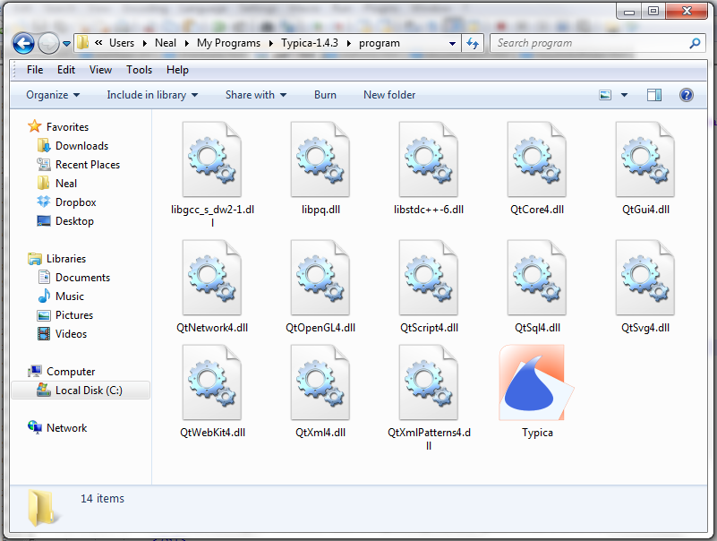Database Connection
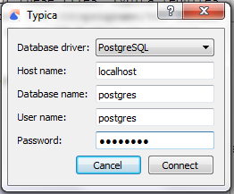The first time you start Typica, you will be asked for the information needed to connect to a database. If you have not installed PostgreSQL, you can click Cancel to continue without connecting to a database. Note that doing so will result in Typica having a very limited feature set. If you have installed PostgreSQL on the same computer as Typica, the host name should be set to localhost. If PostgreSQL is running on a different computer you will need to specify the IP address of that computer.
If you have set up a database for Typica to use, the name of that database should be set as the database name, otherwise the PostgreSQL installer creates a database named postgres which you can use.
Similarly, if you have created a new database user role for Typica, the user name and password that you chose for this should be entered as the user name and password here. Otherwise, the PostgreSQL installer creates a user named postgres with the password that you chose during the installation process.
Once all of this has been entered, click Connect.
You only need to enter this information the first time you start Typica. It will not prompt for this information in the future unless Typica fails to connect to the database or unless you select a menu item that instructs Typica to forget the connection settings.
Troubleshooting: What if it Doesn't Work?
The problem is not with Typica. If you are running PostgreSQL on the same computer as you are running Typica, you have most likely typed something incorrectly. You can use the SQL Shell (psql) to verify that your login information is correct. If you can connect on port 5432, the same information used to connect with psql will also be usable with Typica. Another possibility is that PostgreSQL is not currently running. If you are running PostgreSQL on a different computer, make sure that the other computer is turned on, that PostgreSQL is running, and that it is configured to accept connections from the network.
Open Configuration File
Every time you open Typica, you will be asked to open a configuration file. Typica comes with one example configuration file that meets most needs, however you can create your own if you have special requirements. This documentation assumes that you are using the provided example configuration.
The first time you start Typica or when using a new version of Typica for the first time, you may find that this prompt shows files in the wrong directory. Typica will show files from the most recently used directory or if there isn't one, a platform dependent default.
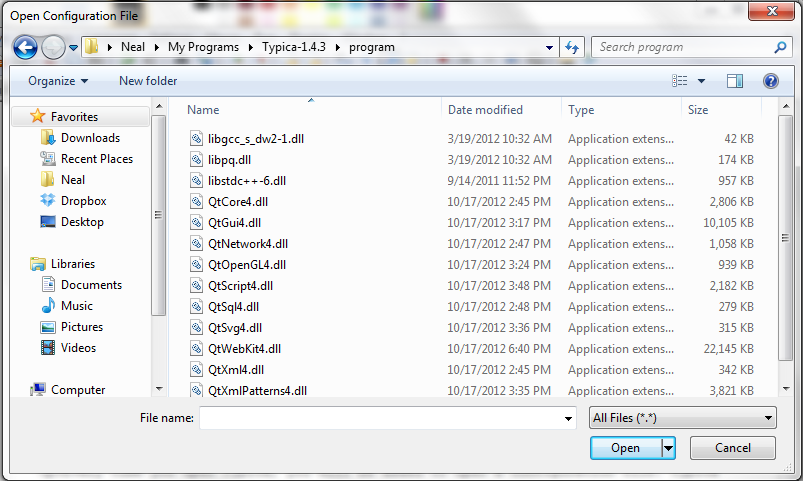This is a normal Open File window which works the same as when you select the Open menu item in most programs. A number of controls are available to change to the correct directory. You want to be in the configuration folder described previously.
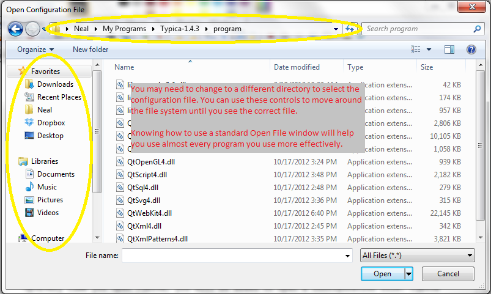Once you are in the correct directory, select config.xml and click Open.
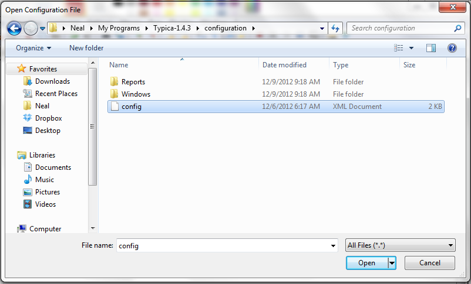 The next window you see should look like this: 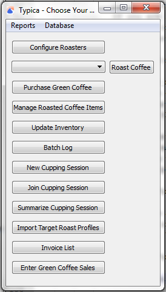Troubleshooting: It Opened Internet Explorer and is showing me gobbledygook.
If this happens, you were not selecting the configuration file from within Typica. Go back to Typica and try again. In particular, note the title bar of the window you are in. See the screenshots above where it says "Open Configuration File". If your window doesn't say that, you're not in Typica. You may think you are, but you're wrong.
Troubleshooting: I opened a file and nothing is happening.
Exit Typica and try again. You most likely selected the wrong file to open. Please go back to the description of which file is required, read the instructions, and follow them carefully.
Tip: Bypass the Configuration Prompt
Typica has a command line option available for specifying which configuration file should be used. To do this, use -c and the path to the configuration you want to open. This will prevent the configuration prompt from appearing. On Microsoft Windows, you can do this by creating a shortcut. In Windows Explorer, go to the directory containing Typica.exe. Right click and select "Create shortcut".
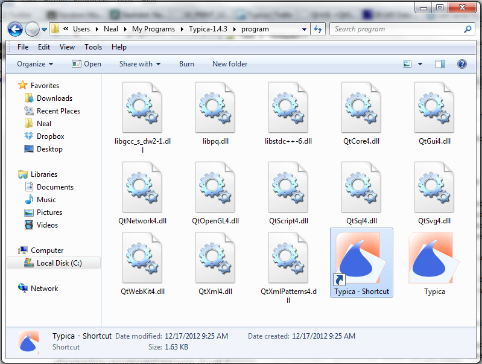Now right click the shortcut and select Properties.
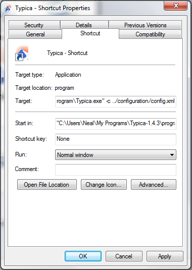Find the field labeled Target. At the end of the line after the quotation mark, add a space and -c ../configuration/config.xml and click OK. The portion of the line that reads ../configuration/config.xml is the path to your desired configuration file relative to the directory with the program. You can also use an absolute path to the file starting with C:\ on Microsoft Windows or / on other platforms.
Tip: Pin the Shortcut for Convenient Access
The shortcut created in the previous tip can be moved anywhere for convenient access. You can right click that and find options to pin that to the task bar for convenient single click access. On Windows 7 you can also pin that to the start menu and on Windows 8 you can pin that to the start screen.
Configuring Typica for your Hardware
Hardware
Once you've started Typica and selected your configuration file, you should see the main navigation window. It looks like this:
The first time you use Typica you will not have any coffee roasters configured for use. This also applies for people who have used older versions of Typica and are now upgrading to version 1.4 or later. To do this, click the Configure Roasters button. This will bring up a new window with two panels. In the lower left you will see a button labeled +. Click that to add your first coffee roaster.
Now you will see an item in the left panel. You can double click on that to rename it if you want. Whatever you name this is what will appear in the list in the navigation window. Choose a name that you'll recognize as the particular machine you'll be using.
When you click on the roaster in the left panel you will see some details in the right panel.
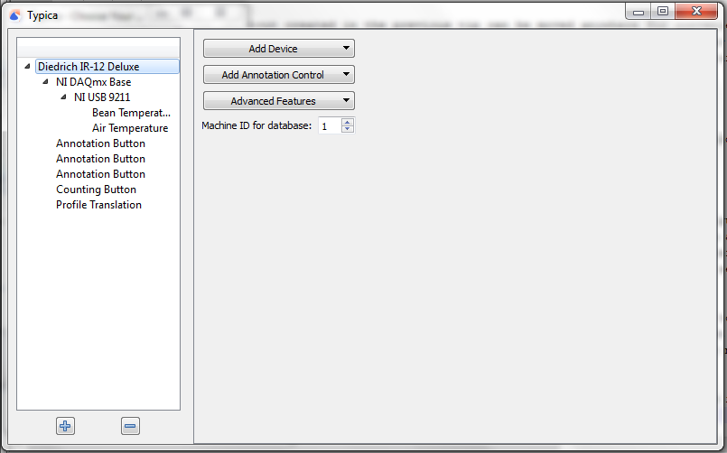Next to "Machine ID for database" you should enter a number. This ID number will be used to identify this roaster in the database and it will be associated with every batch of coffee you roast. If you have used an older version of Typica, you can use the same number that you had specified previously to maintain continuity. If you are setting up Typica for the first time, just use 1 for your first roaster, 2 for your second, and so on.
You will also see three buttons: "Add Device", "Add Annotation Control", and "Advanced Features". First we will want to use the Add Device button to specify the data acquisition hardware you will use to connect this coffee roaster to your computer.
You should see up to three items in a menu when you click "Add Device". Select the one matching the hardware that you intend to use. You will find a new item on the left matching your selection.
In the case of NI-DAQmx Base or NI-DAQmx, clicking the new item in the left panel will change the right panel to display a single button: "Add Device". Click this to see a list of supported hardware and click the item that matches the hardware you have. In the case of NI-DAQmx, you can select "NI USB 9211A" for any supported USB carrier containing a NI 9211 module. Whichever you choose, you will have a new item on the left.
If you instead selected "Modbus RTU Device", you will want to connect the hardware to your computer before continuing. Once you click the new item in the left panel Typica will attempt to detect any serial port on your computer and if your RS-485 to USB serial adapter is not connected, it will not be shown. Click the item and you will see all of the details for configuring Typica to use your Modbus RTU device.
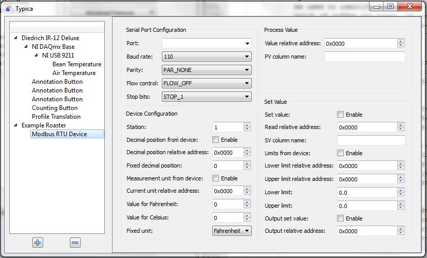The appropriate settings here depend on settings that must be configured on the Modbus RTU device and they depend on which device you have. You will require both the operator manual and the communications manual for your device to determine the correct settings for your hardware.
If you selected NI DAQmx and then NI USB TC01, you will have an item on the left representing that device. Clicking this will show three settings.
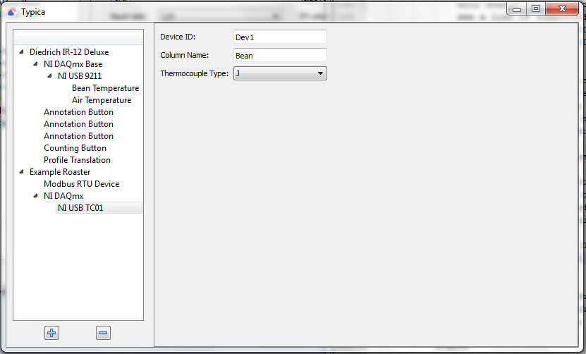The Device ID is how the National Instruments software identifies the device. In the case of this hardware, this will be Devn where n is some number. This will most likely be Dev1 but you can verify this in National Instrument's Measurement & Automation Explorer. The Column Name indicates the name of the column where measurements from this device will be placed in the table view of your roasting data. A short, one word identifier is recommended for this. Note that certain advanced features will require knowing a column name. The Thermocouple Type should match the type of thermocouple you have in your roaster. If the wrong thermocouple type is specified, your measurements will not be correct. Finally, if you double click this item on the left, you can rename it. Whatever the item is named on the left is what will be displayed on the indicator showing the most recent measurement. This can be a longer descriptive name.
In the case of NI 9211 based devices used either through NI DAQmx or NI DAQmx Base, clicking the new item on the left will show a Device ID field and an Add Channel button. If you are using NI DAQmx Base, this will be Devn where n is a number starting with 1 for the first connected device. If you only have one device, this will be Dev1. If you are using NI DAQmx, some hardware will follow this convention and some will not. You should check for the appropriate device ID in Measurement & Automation Explorer. Ensure that you are looking at the item representing the device itself and not just the chassis the device is plugged into. Once the Device ID is specified, you can click Add Channel to add as many thermocouple channels as you have connected to this device. With this hardware it is recommended that you do not connect more than three thermocouples to a single device and these should be wired starting from TC0.
For each channel, you can double click the item on the left to change the text that will appear in the indicator showing the most recent measurement. When you click on these you will see on the right settings for Column Name and Thermocouple Type. The Column Name will appear at the top of the table view in the column where measurements from this channel are placed. A short one word name is recommended. This name should be unique across all channels configured for a particular roaster. The thermocouple type must match the type of the thermocouple connected on that channel. If it does not, your measurements will not be correct.
Annotation Controls
If you click the item on the left representing your roaster, one of the available buttons is "Add Annotation Control". Clicking this will provide three options: "Annotation Button", "Counting Button", and "Numeric Entry". These controls can be used to add annotations to your roasting data as you roast. If you don't want to do this, you don't need to add any of these controls.
An Annotation Button is used to make note of an event fixed at a particular moment in time. If your roaster has a control with a small number of states, you can have a different button for each state and when you activate that button it will place a note at the most recent measurement. Some use this to note airflow control changes, some prefer to note details such as the start of first crack. Clicking the item on the left representing your annotation button will show two settings on the right. The Button Text is the text that will appear on the button and the Annotation Text is the text that will appear in the log when the button is activated. You can have any number of these buttons, but it is recommended to keep the number small.
A Counting Button is like an Annotation Button but you can have as part of the annotation text a number corresponding to the number of times the button has been clicked. This is useful when pulling several samples from a roast for roast profile development as you will have a unique identifier for each sample you pull which you can reference later when attempting to replicate your desired roast. It is recommended that you only have one Counting Button.
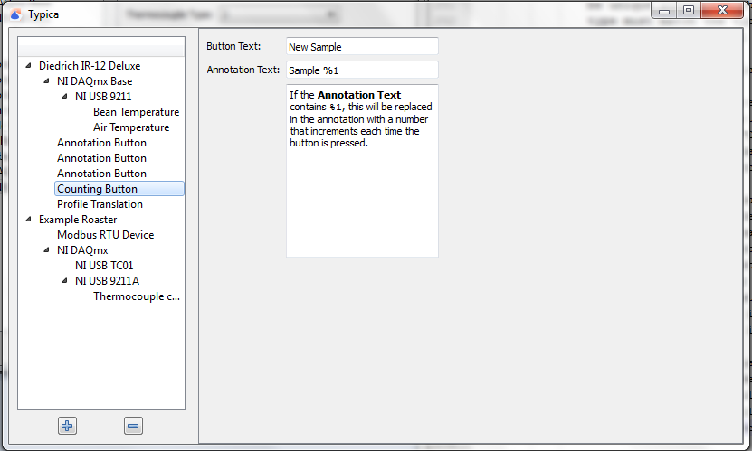A good example of how a Counting Button can be used in profile development is shown in the following video. If you find this approach to coffee roasting interesting, the concepts are extended in the Roast Profile Development video series.
Numeric Entry provides a way to provide notes with numeric data that cannot be logged automatically. Some roasters have fuel or air flow controls with a large number of numerically identified settings. Some people may want to occassionally note the reading from a manometer. This is the control to do that. Clicking the item representing a Numeric Entry on the left will show several options allowing you to specify how the field is identified on the screen, minimum and maximum values, and the number of places after the decimal point to allow. All of these must be set to some value. Optionally you can also specify prefix text and/or suffix text. The content of these fields will be included in the annotation before or after the entered number. This can be used to make clear which control adjustment is represented or the unit a measurement reading was taken in.